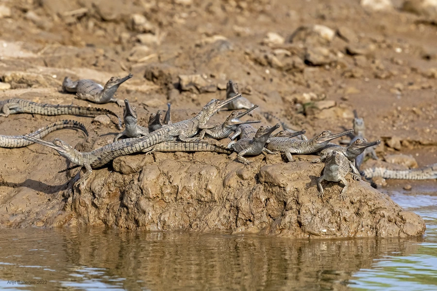

爬行动物 · 动物界
恒河鳄 Gavialis gangeticus

南亚特有的长吻鳄，雄性吻端有球状突起，几乎只吃鱼，因河流开发与捕鱼误伤而成为极度濒危物种。
- 分类
- 门脊索动物门纲爬行纲目鳄目科恒河鳄科属恒河鳄属
- 栖息环境
- 南亚水流平缓、鱼群丰富的河流、河湾与湿地
- 地理分布
- 印度、尼泊尔、孟加拉国等南亚国家的河流水系
- 保护级别
- IUCN 极危（CR）；CITES 附录 I；非中国原产
物种志
恒河鳄体长 3.5–5 米，雄性体重约 160–250 千克，是体型较大的鳄类。它最显著的特征是极细长的吻部，吻长可占头长的一大半，上下颌布满尖锐细齿，适合在水中快速夹住游鱼；成年雄性吻端长有一个球状软骨突起，能发出嗡嗡的共鸣声。
它分布于印度、尼泊尔、孟加拉国等南亚国家的河流与湿地，以鱼类为主食，也吃蛙、虾和小型哺乳动物，白天常把长吻露出水面晒太阳。每年 3–5 月繁殖，雌鳄在沙洲上挖掘深坑产卵约 30–60 枚，孵化期 55–75 天，幼鳄出壳后由母鳄照料数周。由于河流筑坝、采砂、渔业误捕和河岸开发，恒河鳄野外种群急剧减少，被列为极危物种，多国已开展人工繁殖和放归。
形态与习性
- 食性以鱼类为主，也吃蛙和虾
- 体长3.5–5 m
- 体重约 160–250 kg
- 寿命约 40–60 年
- 繁殖卵生，每窝 30–60 枚，孵化 55–75 天
- 活动节律昼行性，常在河岸晒太阳
- 特征雄性吻端有球状软骨突起，可发共鸣声
趣味知识
- 恒河鳄的吻部细长如针，布满细齿，适合在流水中夹住游鱼。
- 成年雄性吻端的球状突起能发出共鸣声，用于吸引雌鳄。
- 恒河鳄是世界上最濒危的鳄类之一，野外种群一度不足数百条。